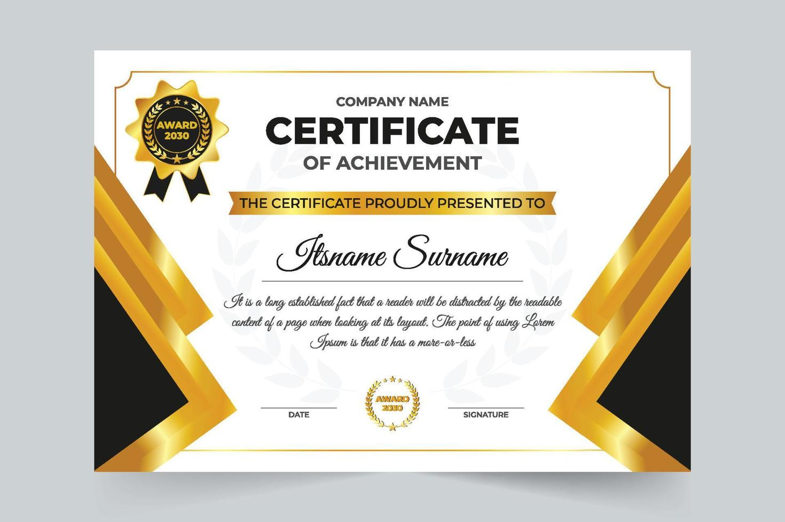
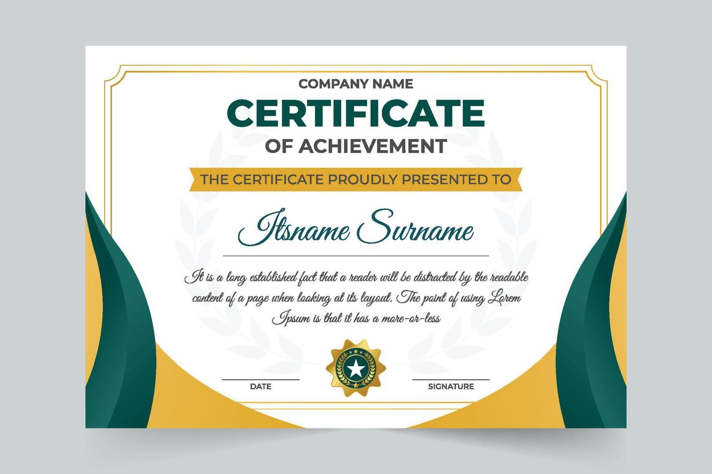

Research recognition and professional achievement.
Highlights from teaching support, achievement, and milestones across Sonia's academic journey.

Research recognition and professional achievement.

Conference and academic participation milestone.
Teaching and service contribution snapshot.
Images from foundational academic milestones and celebrations.
Moments from graduate study, research progress, and achievement.
Professional and applied-learning experiences across placements.